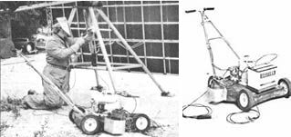
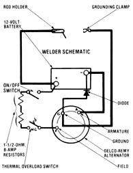

If you can scrounge an old lawn mower, an automobile alternator, and a 12-volt battery, you can . . .
Given a choice between adding either arc or gas welding to the workshop, most tinkerers find a small AC arc unit to be an inexpensive and impressively versatile piece of equipment. However, for those occasional remote outdoor chores that come up around most farmsteads, gas is just about the only practical choice. (Of course, there are portable electric welders available, and one could use a shop unit and tote along a generator . . . but either approach represents a considerable investment, especially if the devices will be used only to accomplish infrequent in-the-field repairs.)
As it happens, MOTHER's researchers run into a fair number of remote welding jobs out at our Eco-Village property - from tacking together a windplant frame to sealing a hydroplant pipe - that are just plain inaccessible to the Lincoln automatic feed unit that they prefer. Therefore, it didn't take long for one member of our team to get so fed up with the hassle of loading both a generator and an arc welder into a pickup truck that he began combining some odds and ends around the shop to make his own portable welder.
Experimenter Dennis Burkholder decided that - after scrounging up an old power mower, a set-aside Delco-Remy automobile alternator, and a weary but serviceable 12-volt deep-cycle battery - he had just about everything he needed to build a portable, intermittent-duty, low-voltage, DC welder. Sure enough, after trying a couple of different combinations of the scrap components, he came up with what must be the least expensive (and strangest looking) arc welder ever assembled.
Essentially, the welder is powered by the roughly 50 amps that the Delco-Remy alternator is capable of producing . . . and is adjusted by varying the speed of the lawnmower engine. But the 12-volt battery is needed to balance out those surges that occur when the arc is struck or broken. Furthermore, Dennis found that the setup worked a lot more smoothly with two 1-1/2-ohm, 8-amp resistors placed in series with the field of the alternator, to cut the field voltage to about 6 volts. (In fact, without the two resistors, striking an arc would nearly kill the 3-HP Briggs & Stratton engine!)
Considering that the parts for the project are almost all scavenged, the welder is amazingly versatile. For one thing, DC capability is often preferred for smooth sheet-metal work, and our lawnmower unit can have its polarity reversed for changing the penetration and spatter qualities of its arc! There are, however, a few limitations to the tool's capabilities. First, the maximum heat of the arc is about 50 amps, so the device won't penetrate more than about 1/4" into steel. In addition, it's best not to use the welder for more than about 20 minutes at a time . . . to avoid overheating the alternator (the thermal overload switch shown in the schematic drawing automatically tells you when enough is enough).
And finally, the unit's low-voltage DC current presents both an advantage and a disadvantage over conventional AC power. Because the voltage of a circuit determines the distance a spark will jump, the rod used with our portable welder must be held steadily close to the surface of the work to maintain an arc. But, because it is a direct-current welder, there's little tendency for the rod to become stuck.
Of course, the most astounding thing about Dennis's welder is how little it cost. The only components that our researcher was forced to buy were the resistors, which he located at the nearest auto parts store. And - even if your storehouse of valuable discards doesn't equal MOTHER's - you should still be able to purchase the resistors, wires, switches, pulleys, and V-belt for less than $20. When you think about it, a $20 DC arc welder, with a built-in dolly, might be the workshop bargain of the year!
|
 |
 |
|